are absorbed across the gap; for direct gaps
are absorbed across the gap; for direct gaps ![\(\lambda_g=\frac{1.24}{E_g[\mathrm{eV}]}\)](m/05c46ccf37c56c9296dccf35882306bfc1342511.svg) µm sets which materials detect or emit which wavelengths.
µm sets which materials detect or emit which wavelengths.
Statement
Absorption
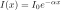
, penetration depth (van Roosbroeck and Shockley 1954). Vertical (
(van Roosbroeck and Shockley 1954). Vertical ( -conserving) transitions: the photon momentum is negligible, so in a direct gap
-conserving) transitions: the photon momentum is negligible, so in a direct gap 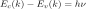
.Derivation (direct gap)
Fermi's golden rule with a constant momentum matrix element:
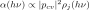
. Joint density of states with reduced mass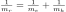
: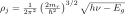
. Indirect: a phonon of energy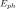
is absorbed or emitted (second order), giving the quadratic edge and values 10–100× lower near the edge.
values 10–100× lower near the edge.
Material table
| material | E_g (eV) | λ_g (µm) | use |
|---|---|---|---|
| Si | 1.12 (ind.) | 1.11 | visible/NIR detectors, solar |
| Ge | 0.66 (ind.) | 1.88 | 1.3–1.55 µm detectors on Si |
| GaAs | 1.42 (dir.) | 0.87 | 850 nm VCSELs, LEDs, solar |
| In0.53Ga0.47As | 0.75 (dir.) | 1.65 | telecom photodiodes |
| InGaAsP/InP | 0.75–1.35 | 0.92–1.65 | telecom lasers |
| GaN / InGaN | 3.4 / 2.4–3.4 | 0.36–0.52 | blue/green LEDs, lasers |
Worked example
Si at 850 nm: cm ,
,
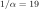
µm — a Si photodiode needs a thick absorption region (slow). GaAs at 850 nm: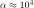
cm, 1 µm suffices. Ge at 1550 nm: cm (tensile strain raises it), hence Ge-on-Si waveguide photodiodes (photodetectors).
Picture: absorption coefficients (approximate, 300 K)
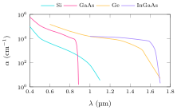
Direct-gap materials (GaAs, InGaAs, Ge above its direct edge) absorb in ≈ 1 µm with a sharp edge; indirect Si needs tens of µm in the near infrared.
Engineering applications
Choice of detector material for each wavelength band, transparency of Si at 1.3–1.55 µm (why silicon photonics works there), solar-cell absorber thickness, emission colour of LEDs (
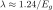
).Exam-style exercise
(a) Thickness of Si that absorbs 90% and 99% of the light entering at 850 nm (
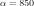
cm). (b) Why is Si a poor choice at 1310 nm? (c) A Ge photodiode at 1550 nm has a 1 µm absorber: fraction absorbed ( cm)?
Solution
(a)
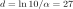
µm; 99%: 54 µm — thick, slow diodes or resonant/waveguide structures. (b)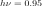
eV < 1.12 eV: below the gap,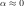
. (c)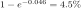
: Ge-on-Si detectors therefore use long waveguide absorbers where light travels tens of µm along the layer.Pitfall
Emission in indirect-gap Si is weak not because the gap is "wrong" but because the radiative rate requires a phonon; non-radiative recombination wins. Strained Ge and III-V integration are the workarounds.